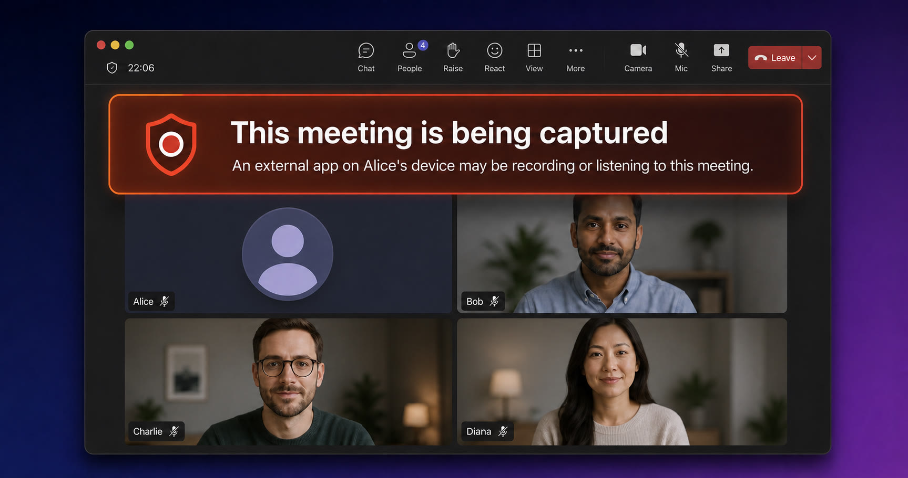

5 minutes
Microsoft Teams Can Detect Recording Apps and Notify Other Participants
TL;DR
- Teams has a feature that can detect third-party recording and AI note-taking applications during a meeting
- On Windows and macOS, it enumerates running processes every 30 seconds and compares their names with a classification table
- The local user sees the detected application name
- Eligible meeting participants are told which participant may be recording, but not which application was found
- Separate Microsoft telemetry contains the matched app name, type, and risk level
- Microsoft can update the table remotely through its Experimentation and Configuration Service (ECS)
- It only runs in meetings where the host organization’s policy enables it; the default is off
- This detector is separate from Teams’ “Prevent screen capture” feature

Does Teams know I opened OBS?
Microsoft introduced Prevent Screen Capture in September 2025. That part was fairly conventional. Teams uses Windows window-content protection, including SetWindowDisplayAffinity, and propagates the protection to meeting pop-out windows. It is a useful speed bump, but it is easy for a sufficiently uncooperative client to bypass.
While looking through the client, however, I found something more interesting: RecordingDetectorModule.
The current Teams client contains a process classification table with entries for OBS, ShareX, Snipping Tool, Camtasia, Bandicam, Loom, Snagit, XSplit, AI note-takers, audio tools, browsers, and a surprisingly broad supporting cast.
For example, the built-in Windows rules include:
{
"name": "obs64",
"displayName": "OBS Studio",
"appType": "ScreenRecorder",
"risk": "High",
"expected": false
}
The complete built-in Windows list contains 167 process names:
Full built-in Windows list (167 entries)
High (33): Airgram, Avoma, Chorus, Fathom, Fireflies, Gong, Grain, Read AI, Tactiq, CamtasiaStudio, handy, Krisp, LogiCapture, ManyCam, natspeak, obs32, obs64, Otter, ShareX, voiceai, willow voice, Camtasia, Loom, obs, streamlabs, XSplit, XSplit.Core, Zoom, Zoom.exe, murmure, OpenWhispr, Typeless, Wispr Flow.
Medium (24): Action, Audacity, bdcam, CamRecorder, copilot, copilot.exe.old, Debut, FlashBack, GoldWave, M365Copilot, mscopilot, NVIDIA Share, Resolve, ScreenPal, ScreenToGif, Snagit32, SnagitEditor, SnippingTool, SoundRecorder, WavePad, Ableton Live 12 Suite, Adobe Premiere Pro, Aximmetry.Composer, MOTIV Mix.
Low (76): ffmpeg, ffplay, ffprobe, nvcontainer, VoiceMeeter, VoiceMeeter8, chrome, Code, firefox, GoXLR App, msedgewebview2, msrdc, mstsc, NVIDIA Broadcast, proximity, python, qemu-system-x86_64, rundll32, SoTGame, SteelSeriesSonar, Unity, voicemeeter_x64, brave, msedge, iCUE, Elgato.WaveLink, FxSound, LogiTune, SilencePlayer, SoundKeeper64, comet, opera, PrismaAccessBrowser, thorium, vivaldi, waterfox, Figma, thunderbird, Signal, Telegram, Viber, WeChat, Weixin, WhatsApp.Root, XboxPcApp, Zoiper5, AzureKinectServer, github, scrcpy, conhost, powershell, WindowsTerminal, RuneLite, UnrealEditor, UnrealGame-Win64-Shipping, GoTV, Photos, cloudmusic, QQMusic, Spotify, vlc, Microsoft.Media.Player, wmplayer, dcvagent, rdcx, RDCMan, vmware-vmx, Windows365, VoiceAssistant, jfw, fsSynth32, nvda, wfica32, vmconnect, horizon-protocol, LiftComponent.
None / expected (34): POWERPNT, TextInputHost, audiodg, CiscoCollabHost, Cortana, Discord, g2mcomm, GoToMeeting, HdxRtcEngine, Microsoft Teams, ms-teams, ms-teams_modulehost, MsMmrHost, MsTeamsVdi, RuntimeBroker, SearchHost, ShellExperienceHost, Skype, SkypeApp, Slack, svchost, System, SystemSettings, Teams, webexmta, EXCEL, OUTLOOK, Todo, WINWORD, LiveCaptions, Narrator, osk, VoiceAccess, RtkAudUService64.
What happens after a match?
When the native detector reports a match, the meeting JavaScript applies the configured app-type and risk-level filters, then stores the remaining app names, types, and risk levels locally.
The defaults in the JavaScript are:
const displayRiskLevels = externalRecordingDisplayRiskLevels ?? ["Medium", "High", "Critical"];
const publishRiskLevels = externalRecordingMetaDataPublishRiskLevels ?? ["High", "Critical"];
| Risk | Local warning | Other participants warned |
|---|---|---|
None |
No | No |
Low |
No | No |
Medium |
Yes | No |
High |
Yes | Yes |
Critical |
Yes | Yes |
OBS is classified as High, so it qualifies for both.
The user running the matched application gets a dismissible warning. It is quite direct:
You are capturing meeting with OBS Studio
An app on your device has been detected to be listening or recording this meeting. Others in the meeting have been notified about this.
Teams then invokes this GraphQL mutation when metadata publication is enabled:
mutation ($teamsCallId: ID!, $isRecording: Boolean!, $recordingCount: Int!) {
publishLocalExternalRecordingState(
teamsCallId: $teamsCallId
isRecording: $isRecording
recordingCount: $recordingCount
)
}
The mutation includes neither the process name, application type, nor risk level. Other clients receive participant state containing externalRecording.isRecording and use it to render an indicator:
This meeting is being captured
An external app on Alice’s device may be recording or listening to this meeting.
Who can see it is separately feature-gated. Depending on externalRecordingVisibility, it can be available to everyone or limited to organizers and co-organizers.
Telemetry and remote configuration
There is a second outbound path. The client emits an external_recording_detected_apps telemetry event containing detector matches shaped as:
[
{
"appName": "OBS Studio",
"appType": "ScreenRecorder",
"riskLevel": "High"
}
]
Microsoft’s telemetry therefore receives richer information about the matched application.
Microsoft can also change the process list without shipping a Teams update. The hard-coded JSON is the built-in default, but Teams fetches configuration from Microsoft’s Experimentation and Configuration Service (ECS), including:
recordingDetectorClassificationsWin
recordingDetectorClassificationsMac
recordingDetectorPollIntervalMs
recordingDetectorStopTimeoutMs
recordingDetectorUnknownRiskLevel
recordingDetectorUnclassifiedRiskLevel
The response is cached locally in ecs_settings.dat64. If Microsoft supplies a valid classification list, the client uses it; if parsing fails, native logging says it uses the built-in table.
How detection runs
An organization administrator can enable the feature with the EnableExternalRecordingDetection meeting policy, which defaults to false. Microsoft says it detects third-party screen recorders, audio recorders, and AI note-takers and notifies participants, but does not document the implementation details discussed here. It only runs during an eligible active meeting and stops when the call ends. This policy is independent of Prevent Screen Capture.
On Windows, Teams takes an initial process snapshot with CreateToolhelp32Snapshot, walks it with Process32FirstW and Process32NextW, and uses ProcessIdToSessionId and QueryFullProcessImageNameW to identify processes in the applicable session. It repeats this every 30 seconds by default and compares the names with its configured list. This establishes that a listed process is running, not that it has started recording.
macOS does the same thing
I also checked out how it works on the macOS version. The detector lives in the main MSTeams Mach-O, which helpfully contains its original source path:
native_modules/mods/recordingdetector/mac/mac_detection_module.cpp
It imports process-enumeration facilities including sysctl, getuid, proc_pidinfo, and proc_pidpath, performs periodic process snapshots, and applies recordingDetectorClassificationsMac. It does not need macOS Screen Recording permission because it is reading process information, not the screen.
The built-in Mac list includes:
| Process | Display name | Type | Risk |
|---|---|---|---|
obs |
OBS Studio | ScreenRecorder | High |
QuickTime Player |
QuickTime Player | ScreenRecorder | High |
ManyCam |
ManyCam | ScreenRecorder | High |
VoiceMemos |
Apple Voice Memos | AudioRecorder | Medium |
Granola Helper |
Granola | AIAssistant | High |
Wispr Flow Helper |
Wispr Flow | AIAssistant | High |
zoom.us |
Zoom | Communication | High |
System processes such as coreaudiod, WindowServer, and ReplayKit’s replayd are expected and assigned None risk.
Thinking about secretly recording a Teams meeting? Think twice—the other participants might find out.